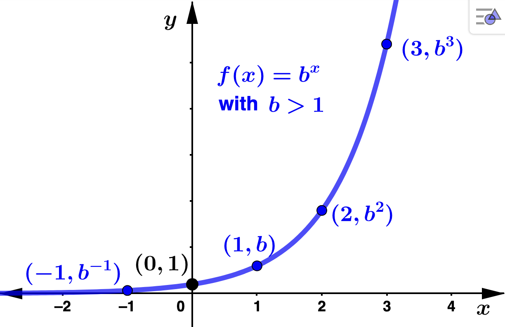
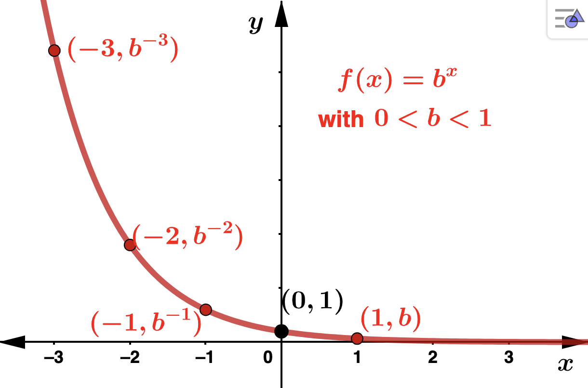
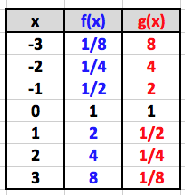
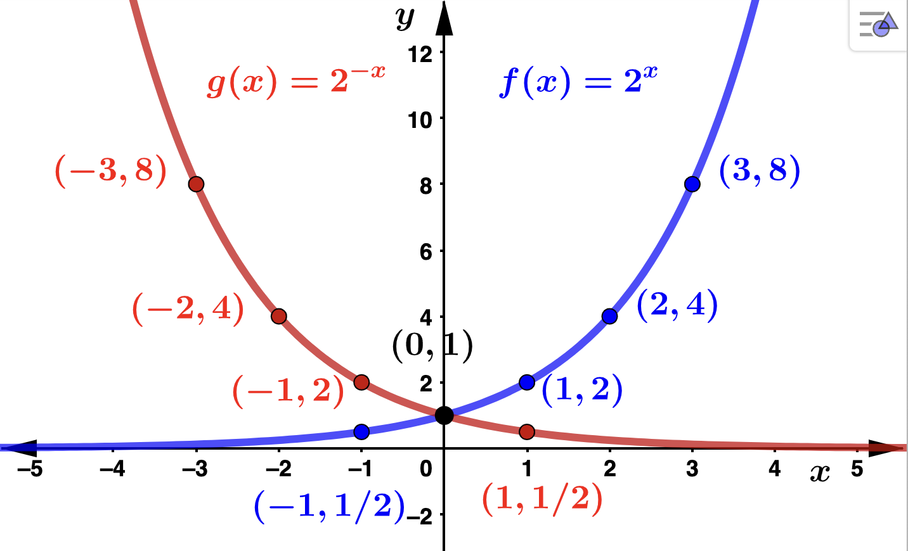
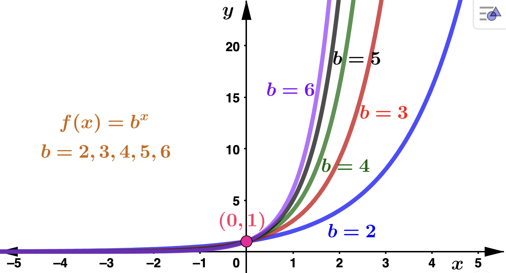
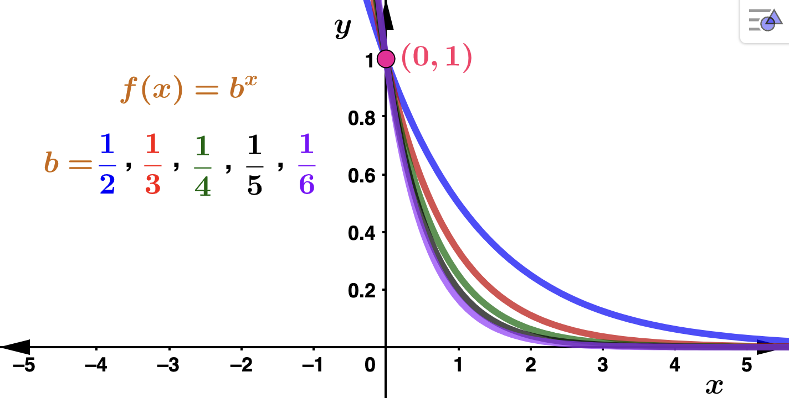
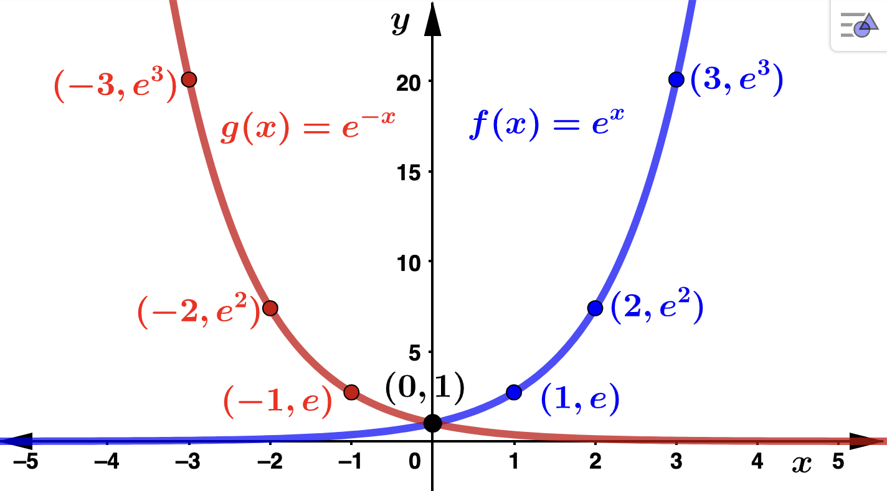
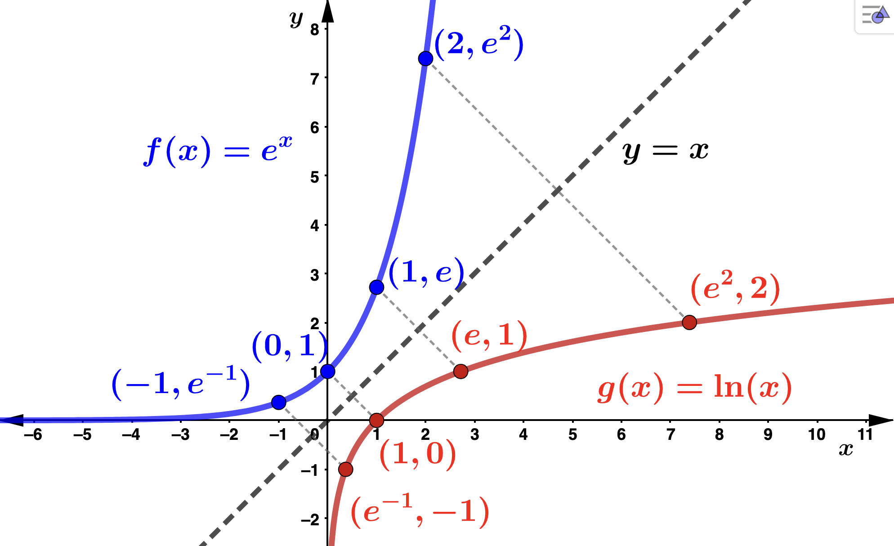
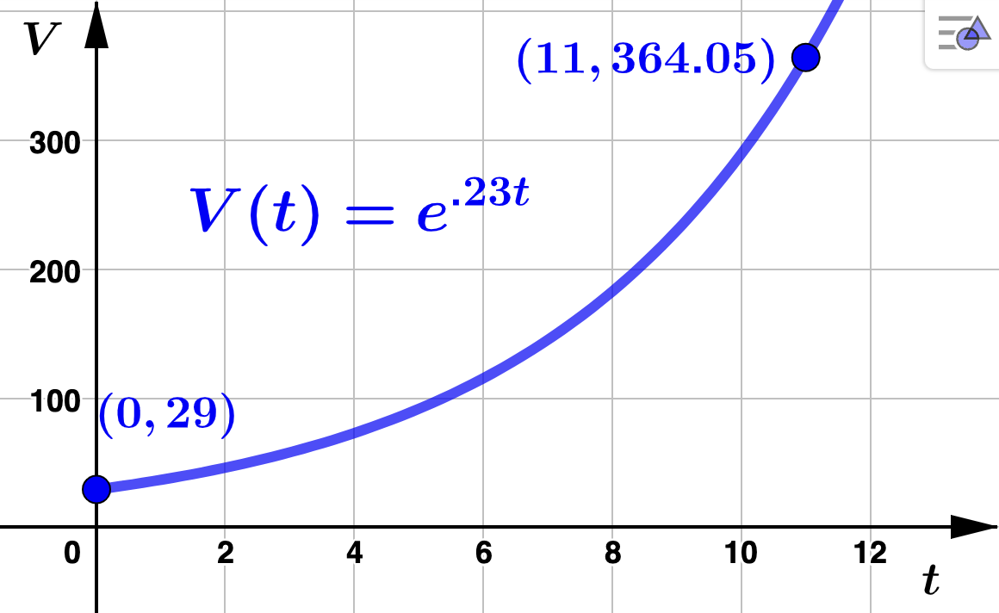

Section 5.1 Basic Properties
Subsection 5.1.1 Exponential Functions
Before you begin, you should review the properties of exponents as needed.
For example,
- \(\displaystyle 3^x\)
- \(\displaystyle \left( \dfrac{1}{3}\right)^x\)
- \(\displaystyle (\sqrt{3})^x\)
etc., are exponential functions, while
- \(\displaystyle x^3\)
- \(\displaystyle \left( - \dfrac{1}{3}\right)^x\)
- \(\displaystyle 1^x\)
etc., are not exponential functions.
Observe that using the properties of exponents \(\left( \dfrac{1}{3}\right)^x\) can be expressed as \(\left( \dfrac{1}{3}\right)^x = (3^{-1})^{x} = 3^{-x}\text{.}\) So, \(3^{-x}\) is an exponential function with base \(b = \frac{1}{3}\text{.}\) Also observe that using the properties of exponents \(3^{x+2} = 3^x \cdot 3^2 = 9 \cdot 3^x\) is an exponential function with base \(b = 3\) while \(3^{2x} = (3^2)^x = 9^x\) is an exponential function with base \(b = 9\text{.}\)
Below are the general shapes for the graphs of exponential functions. Recall that \(b^0 = 1\) for every real number \(b\text{,}\) so that \((0,1)\) will be the \(y\)-intercept for \(b^x\text{.}\) Notice that if \(b > 1\) and \(x < 0\) then \(0 < b^x < 1\text{.}\) Also, if \(0 < b < 1\) and \(x > 0\) then \(0 < b^x < 1\text{.}\) In any case, for any base, \(b\text{,}\) \(b^x > 0\) for every real number \(x\text{.}\)


Take for instance \(f(x) = 2^x\text{,}\) (\(b=2 > 1\)) and \(g(x) = (1/2)^x = 2^{-x}\) (\(0 <
b = 1/2 < 1\)). Note that \(g(x) = f(-x)\) (see the values in the table below) so that these graphs are symmetric about the \(y\)-axis.


Let \(b > 0\text{,}\) \(b \neq 1\text{,}\) and \(f(x) = b^x\text{.}\) From the graphs above we can see that
- dom(\(f\)) \(= (-\infty, \infty)\)
- rng(\(f\)) \(= (0,\infty)\)
- \(f(x)\) has \(y\)-intercept \(= (0,1)\)
- \(f(x)\) has no \(x\)-intercepts. Hence \(b^x = 0\) has no solutions. In fact, \(b^x = y\) has no solutions when \(y \leq 0\text{.}\)
Also, if the bases \(b_1\) and \(b_2\) are such that \(b_1 < b_2\text{,}\) then \(b^{x}_1 < b^{x}_2\) for all \(x\text{.}\) You can see this in the graph below for bases \(b=2,3,4,5,6\text{.}\)

You should also be able to see that if the base \(b > 1\text{,}\) then \(b^x \rightarrow \infty\) as \(x \rightarrow \infty\text{.}\) In this case, the larger the base, the more rapid the growth of \(b^x\text{.}\) Conversely, if the base \(0 < b < 1\text{,}\) then \(b^x \rightarrow 0\) as \(x \rightarrow \infty\) as is illstrated in the figure below. In this case, the smaller the base, the quicker \(b^x\) decays to 0.

The Number \(e\):
The number \(e\text{,}\) called Euler's number, is one of the most important numbers in mathematics. It is an irrational number (like \(\pi\)) and one of the most common bases used for exponential models. A few digits are \(e \approx 2.718281828459...\) (non-repeating, non-terminating) so that 2 < e < 3. Formally,
Definition 5.1.4.
\begin{equation*}
e = \lim_{n \rightarrow \infty} \left(1 + \dfrac{1}{n} \right)^n
\end{equation*}
and for this reason has many applications in financial mathematics (as you will see when we get to compound interest and continuous compounding).
\(f(x) = e^x\) is called the natural exponential function. The graphs of \(f(x)=e^x\) and \(g(x) = e^{-x}\) are below:

Subsection 5.1.2 Logarithmic Functions
A logarithm can be thought of as an exponent. The notation \(\log_{b}(x)\) is read "log (or logarithm) base \(b\) of \(x\text{.}\)" Logarithms have a special relationship with exponential functions, as can be seen from the following definition.
Definition 5.1.5.
Let \(b\) be positive number that is not 1 (that is, \(b > 0\text{,}\) \(b \neq 1\)). Then
\begin{equation*}
y = \log_{b}(x) \quad \textrm{means} \quad b^y = x.
\end{equation*}
After making the appropriate substitutions we have
\begin{equation*}
x = b^{\log_{b}(x)} \quad \textrm{and} \quad y = \log_{b}(b^y)
\end{equation*}
In other words, provided the same base \(b\) is used, exponential functions and logarithms "undo" each other. As an example, \(\log_{5}(25) = 2\) since \(5^2 = 25\text{.}\) In other words, \(\log_{5}(5^2) = 2\) and \(5^{\log_{5}(25)} = 25\text{.}\)
Example 5.1.6.
Example 5.1.7.
- \(\log_{b}(10) = \dfrac{1}{2}\) Solution.This means that \(b^{1/2} = 10\) so that \(b = 10^2 = 100\)
Example 5.1.8.
Definition 5.1.9.
For \(b > 0\text{,}\) \(b \neq 1\text{,}\) \(f(x) = \log_{b}(x)\) is called a logarithmic function, \(b\) is called base.Just as with exponential functions, the number \(e\) is an extremely important, commonly used base for logarithmic functions. When \(e\) is used as a base, the notation changes from \(\log_{e}(x)\) to \(\ln(x)\) (where it is understood that \(e\) is the base).
The function \(g(x) = \ln(x)\) is called the natural logarithmic function. The graph of \(f(x) = e^x\) and \(g(x) = \ln(x)\) are given below. Notice the "inverse" relationship between the two functions. Recall:
\begin{equation*}
y = \ln(x) \quad \textrm{means} \quad e^y = x.
\end{equation*}
so that \(\ln(e^x) = x\) for every real \(x\) and \(e^{\ln(x)} = x\) for every \(x > 0\text{.}\) That these functions are inversely related can be seen by observing that \(g(x)\) is the reflection of \(f(x)\) through the line \(y=x\text{.}\) Notice how the reflected points identified in the graph have their \(x\) and \(y\) coordinates interchanged.

Observe:
- dom\((\ln(x))\) = rng\((e^x)\) = \((0,\infty)\)
- rng\((\ln(x))\) = dom\((e^x)\) = \((-\infty,\infty)\)
- \(\ln(1)=0\) since \(e^0 = 1\)
- \(\ln(e)=1\) since \(e^1 = e\)
- \(\ln(e^x)=x\) for every real number \(x\)
- \(e^{\ln(x)} = x\) for every \(x > 0\)
Example 5.1.11.
We will use logarithms to help us solve exponential equations by applying the following:
Fact 5.1.12.
Suppose \(a > 0\text{.}\) For any real number \(t\text{,}\)
\begin{equation*}
\ln(a^t) = t\ln(a)
\end{equation*}
It should be pointed out that Fact 5.1.12 remains valid for any logarithm, and not just the natural logarithm. In other words, if \(b > 0\text{,}\) \(b\neq 1\text{,}\) then
\begin{equation*}
\log_b(a^t) = t\log_b(a).
\end{equation*}
Fact 5.1.12 is uselful when sloving exponential equations. For example, to solve
\begin{equation*}
3^t = 11,
\end{equation*}
we can apply the natural logarithm to both sides and then solve the resulting equation:
\begin{align*}
\ln(3^t) \amp = \ln(11) \\
\\
t\ln(3) \amp = \ln(11) \\
\\
t \amp = \frac{\ln(11)}{\ln(3)}
\end{align*}
Rounded to three decimal places \(t \approx 2.183 \text{.}\) Note that we could have used any logarithm to solve this equation. Since the base is 3 and \(\log_3(3) = 1\text{,}\) the base 3 logarithm is another good choice:
\begin{align*}
\log_3(3^t) \amp = \log_3(11) \\
t\log_3(3) \amp = \log_3(11) \\
t \amp = \log_3(11) \\
t \amp \approx 2.183
\end{align*}
Example 5.1.13.
\begin{equation*}
V(t) = 29e^{.23t}
\end{equation*}
thousand homes, where \(t\) is the number of years after 2009. - How many vacation rentals did The Great Escape initially have on their site? How many did they have in 2015? Solution.To determine the number of rentals in 2009, we evaluate \(V\) at \(t=0\text{:}\)\begin{equation*} V(0) = 29e^{.23(0)} = 29e^0 = 29(1) = 29 \end{equation*}so that there were 29,000 rentals initially listed in their marketplace. To determine the number of rentals in 2015, we evaluate \(V\) at \(t=6\text{:}\)\begin{equation*} V(6) = 29e^{.23(6)} \approx 115.272 \end{equation*}so that there were 115,272 rentals listed in their marketplace in 2015.
- How long did it take The Great Escape have 364,000 vacation rentals posted on their site? Solution.We need to solve \(V(t) = 364\) for \(t\text{.}\) To do this, we use Fact 5.1.12:\begin{align*} 29e^{.23t} \amp = 364 \\ \\ e^{.23t} \amp = \frac{364}{29} \\ \\ \ln(e^{.23t}) \amp = \ln\left(\frac{364}{29}\right) \\ \\ .23t\ln(e) \amp = \ln\left(\frac{364}{29}\right) \\ \\ .23t \amp = \ln\left(\frac{364}{29}\right) \\ \\ t \amp = \frac{\ln\left(\frac{364}{29}\right)}{.23} \\ \\ t \amp \approx 10.999 \end{align*}It took The Great Escape about 11 years (which corresponds to the year 2020) to have 364,000 vacation rentals posted on their site. Note that in the third step above we could have employed Item 5 to see that \(\ln(e^{.23t}) = .23t\text{.}\) The graph of \(V(t)\) is below with the corresponding points identified.
Example 5.1.14.
\begin{equation*}
C(a) = 20 + \ln(4a + 1)
\end{equation*}
hundred thousand dollars where \(a\) is the number of ATVs that are being shipped. - What are ADTF Distributors shipping costs for 100,000 ATVs? Solution.We evaluate \(C\) at \(a = 100,000\text{:}\)\begin{equation*} C(100,000) = 20 + \ln(4(100,000) + 1) \approx 32.9 \end{equation*}ADTF Distributors' cost for shipping 100,000 ATVs is $3,290,000
- If the shipping cost is $3,400,000, how many ATVs were shipped? Solution.We solve \(C(a) = 34\text{,}\) or \(20 + \ln(4a + 1) = 34\text{,}\) for \(a\text{.}\) We need to "separate" the \(a\) from the natural log. To do this, first note that if \(b > 0\text{,}\) \(b \neq 1\) and \(n = m\text{,}\) then \(b^n = b^m\text{.}\) So, we can rewrite the equation, "exponentiate" both sides using \(b=e\text{,}\) and use Item 6. Doing so, we have\begin{align*} 20 + \ln(4a + 1) \amp = 34 \\ \\ \ln(4a + 1) \amp = 14 \\ \\ e^{\ln(4a + 1)} \amp = e^{14} \\ \\ 4a+1 \amp = e^{14} \\ \\ 4a \amp = e^{14} - 1 \\ \\ a \amp = \frac{e^{14} - 1}{4} \\ \\ a \amp \approx 300,650.82 \end{align*}Roundiong up, if the shipping costs are $3,400,000, ADFT Distributors shipped about 300,651 ATVs.
Notice that we can use Item 6, and Fact 5.1.12 to rewrite any exponential function in terms of base \(e\text{.}\)Indeed, for \(b > 0\text{,}\) \(b \neq 1\text{,}\)
\begin{equation*}
b^t = e^{\ln(b^t)} = e^{\ln(b) \cdot t} = e^{kt}
\end{equation*}
where \(k = \ln(b)\text{.}\) It should be clear that if
\begin{equation*}
e^{kt} = b^t
\end{equation*}
then \(b=e^k\)
We have the following, which will be useful when converting bases of exponential models.
- If \(b > 0\text{,}\) \(b \neq 1\) then \(b^t = e^{kt} \) where \(k = \ln(b)\)
- For any real number \(k \) we have \(e^{kt} = b^t \) where \(b = e^k\)